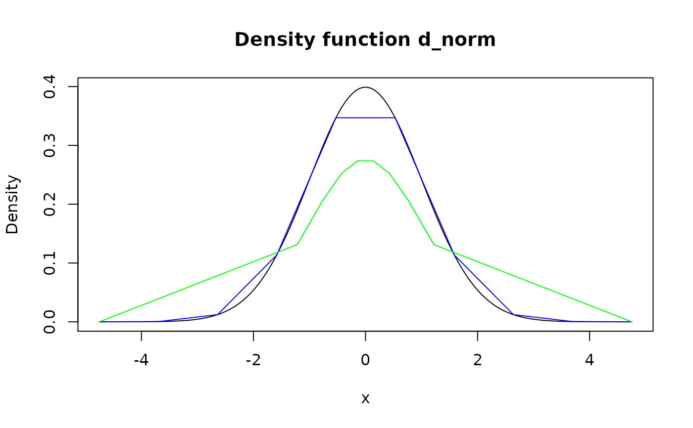

Modify grid of pdqr-function (rows of "x_tbl" metadata) to increase (upgrid) or decrease (downgrid) granularity using method of choice. Upgridding might be useful in order to obtain more information during certain type of transformations. Downgridding might be useful for decreasing amount of used memory for storing pdqr-function without losing much information.
form_regrid(f, n_grid, method = "x")| f | A pdqr-function. |
|---|---|
| n_grid | A desired number of grid elements in output. |
| method | Regrid method. Should be one of "x" or "q". |
A pdqr-function with modified grid.
The goal here is to create pdqr-function which is reasonably similar
to f and has n_grid rows in "x_tbl" metadata.
General algorithm of regridding is as follows:
Compute reference grid. For method "x" it is a sequence of equidistant
points between edges of f's support. For method "q" -
sequence of quantiles for equidistant probabilities from 0 to 1. Lengths of
reference grids for both methods are n_grid.
Adjust f's grid to reference one. This is done depending on f's
type and which kind or regridding is done (upgridding is the
case when n_grid is strictly more than number of rows in "x_tbl" metadata,
downgridding - when it is strictly less):
Type "discrete":
UPgridding "discrete" functions is not possible as it is assumed
that input "discrete" functions can't have any "x" values other then
present ones. In this case input is returned, the only case when
output doesn't have desired n_grid rows in "x_tbl" metadata.
DOWNgridding "discrete" functions is done by computing nearest
match of reference grid to f's one and collapsing (by summing
probabilities) all "x" values from input to the nearest matched ones.
Here "computing nearest match" means that every element of reference
grid is one-one matched with subset of unique values from f's "x"
elements. Matching is done in greedy iterative fashion in order to
minimize total distance between reference grid and matched subset.
Note that this can result in not optimal (with not minimum total
distance) match and can take a while to compute in some cases.
Type "continuous":
UPgridding "continuous" functions is done by adding rows to "x_tbl"
metadata with "x" values equal to those elements of reference grid
which are the furthest away from input "x" grid as a set. Distance
from point to set is meant as minimum of distances between point and
all points of set. Values of "y" and "cumprob" columns are taken as
values of corresponding to f d- and p-functions.
DOWNgridding "continuous" functions is done by computing nearest
match of reference grid to f's one (as for "discrete" type) and
removing all unmatched rows from "x_tbl" metadata.
Special cases of n_grid:
If n_grid is the same as number of rows in "x_tbl" metadata, then input
f is returned.
If n_grid is 1, appropriate new_*() function is used with single
numeric input equal to distribution's median.
form_resupport() for changing support of pdqr-function.
form_retype() for changing type of pdqr-function.
Other form functions: form_estimate,
form_mix, form_resupport,
form_retype, form_smooth,
form_tails, form_trans
# Type "discrete"
d_dis <- new_d(data.frame(x = 1:10, prob = 1:10/55), type = "discrete")
# Downgridding
meta_x_tbl(form_regrid(d_dis, n_grid = 4))#> x prob cumprob
#> 1 1 0.05454545 0.05454545
#> 2 4 0.21818182 0.27272727
#> 3 7 0.38181818 0.65454545
#> 4 10 0.34545455 1.00000000#> x prob cumprob
#> 1 1 0.1090909 0.1090909
#> 2 6 0.4000000 0.5090909
#> 3 9 0.3090909 0.8181818
#> 4 10 0.1818182 1.0000000
# Upgridding for "discrete" type isn't possible. Input is returned
identical(d_dis, form_regrid(d_dis, n_grid = 100))#> [1] TRUE
# Upgridding
d_con <- new_d(data.frame(x = 1:3, y = rep(0.5, 3)), type = "continuous")
meta_x_tbl(form_regrid(d_con, n_grid = 6))#> x y cumprob
#> 1 1.0 0.5 0.0
#> 2 1.4 0.5 0.2
#> 3 2.0 0.5 0.5
#> 4 2.2 0.5 0.6
#> 5 2.6 0.5 0.8
#> 6 3.0 0.5 1.0
# Pdqr-function with center at median is returned in case `n_grid` is 1
form_regrid(d_dis, n_grid = 1)#> Probability mass function of discrete type
#> Support: [7, 7] (1 element) # Dirac-like function is returned
form_regrid(d_con, n_grid = 1)#> Density function of continuous type
#> Support: ~[2, 2] (2 intervals)